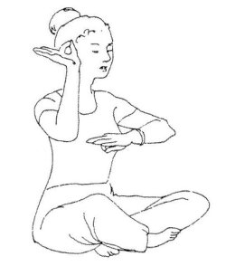

What is Emotional Intelligence (EQ)?
CSS Yoga: The Asana (Positions) of Elements
A framework for governance design
Permaculture Economics: patterns in the regenerative movement

This is the hazardous construction site of my website home page.
Off-site links will open in a new tab.